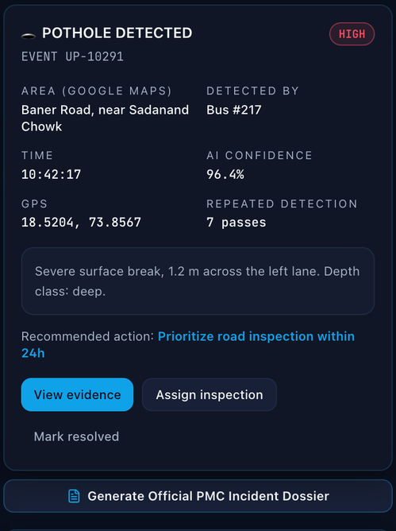
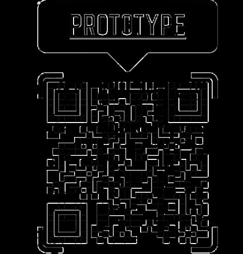
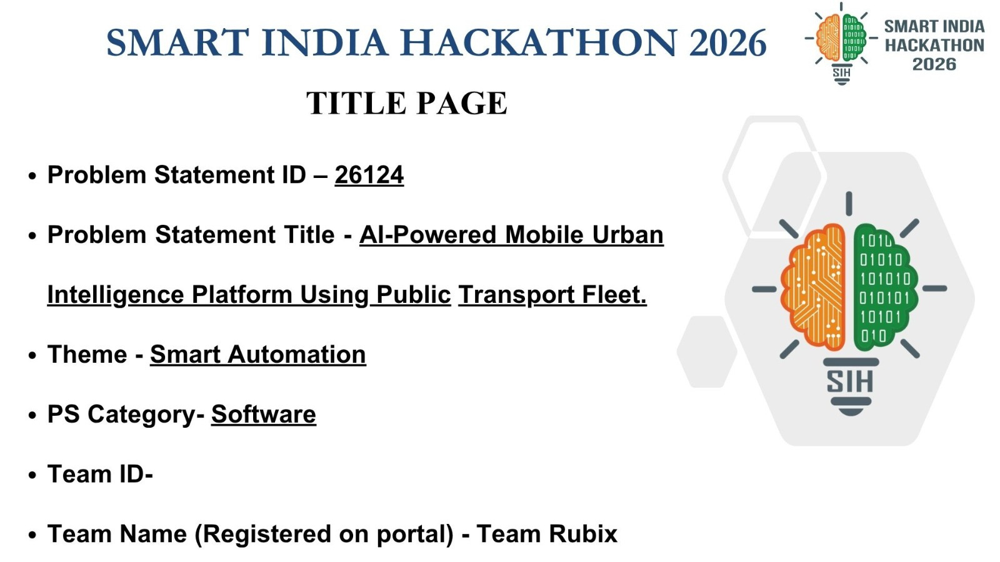
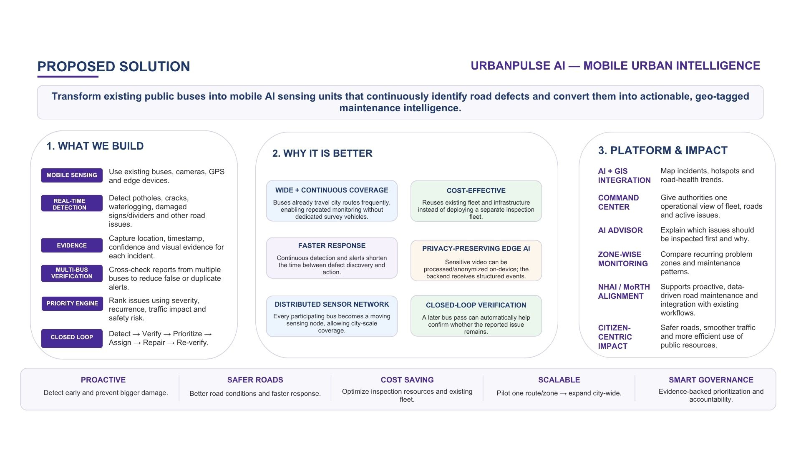

Smart India Hackathon 2026
Team Rubix • Problem Statement ID: 26124UrbanPulse AI • Smart City Road Monitoring
An AI-powered mobile urban infrastructure monitoring system that transforms everyday public buses into moving sensors to detect potholes, damaged dividers, and road hazards in real time.
1. The Problem Statement
Problem Statement ID: 26124
Potholes, broken road dividers, faded lane markings, and damaged asphalt frequently go unnoticed by municipal authorities for weeks or months. Traditional road inspections rely on slow, manual survey vehicles or citizen complaint portals that are reactive and under-reported, leading to severe traffic accidents, vehicle damage, and urban gridlock.
2. The Proposed Solution
Instead of deploying expensive dedicated survey vehicles, UrbanPulse AI converts the city's existing public transit buses into passive, high-frequency mobile urban sensors.
Equipped with camera units mounted behind the windshield, edge devices continuously run YOLOv8 object detection on video feeds, identifying road defects as buses navigate daily municipal routes. Detected incidents are geocoded with real-time GPS coordinates, checked for duplicates, and dispatched instantly to a central GIS dashboard.
3. Live GIS Dashboard • Click to Expand
The centralized municipal control center displaying real-time incident heatmap across Pune city routes:



4. Key Features
- ✦ Road Defect Detection: Real-time computer vision identifying potholes, cracks, and broken dividers.
- ✦ GPS-Based Incident Mapping: Every defect is instantly tagged with high-precision geographic coordinates.
- ✦ Severity Classification: Automated triage classifying hazards (Minor, Moderate, Critical) for priority dispatch.
- ✦ Duplicate Detection & Validation: Spatial clustering algorithms prevent multiple buses on the same route from spamming duplicate alerts.
- ✦ Municipal GIS Dashboard: Live route heatmaps, bus fleet telemetry, and maintenance status tracking.
- ✦ Maintenance Tracking: Closes the loop from automated detection to municipal repair sign-off.
5. Key Technologies
6. Team Rubix
Newton School of Technology7. My Contribution & Learnings
Editable Student ReflectionMy Contribution
As a first-year student member of Team Rubix, I contributed to research on municipal road defect datasets, user interface wireframes for the dashboard incident alert feeds, presentation slide synthesis, and hackathon ideation. (Editable placeholder: update with your exact personal focus areas as the project progresses).
Key Hackathon Learnings
1. Edge AI in the physical world: Seeing how YOLOv8 processes frame-by-frame camera feeds opened my eyes to practical applied machine learning beyond theoretical code tutorials.
2. Interdisciplinary collaboration: Working with 5 teammates under hackathon pressure taught me the value of clear communication, task division, and shared version control.
3. Civic tech impact: Technology feels most rewarding when it solves tangible civic problems that affect everyday citizens.
8. Original Presentation Slides

